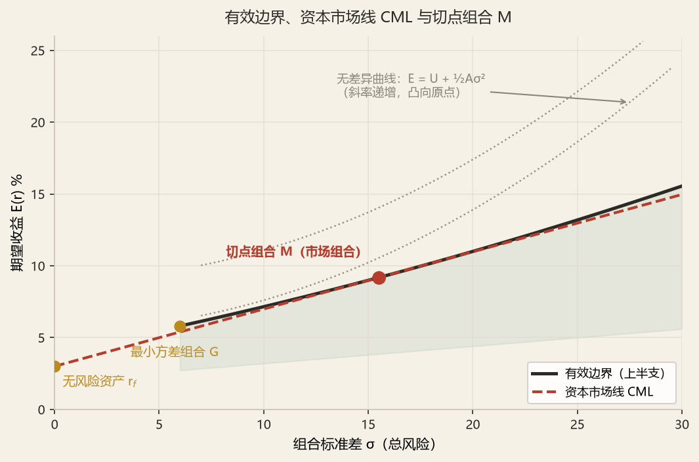
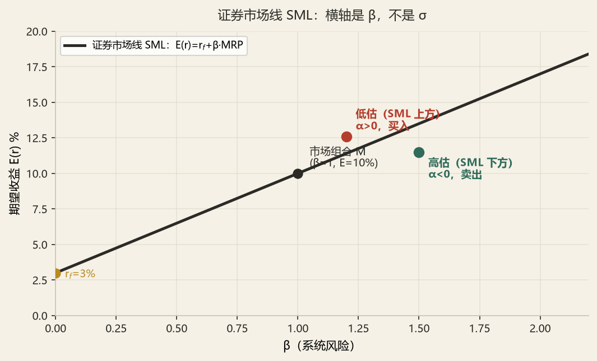

投资学理论
3.0五级台阶总览
现代投资学理论不是一堆并列的模型，而是一条层层递进的逻辑链。每一级都在回答上一级留下的问题。
风险 = 标准差
用方差/标准差度量收益的不确定性；用效用函数刻画风险厌恶
效用函数
U = E(r) − ½Aσ²，A 为风险厌恶系数
无差异曲线
同效用水平的 (σ, E(r)) 组合，风险厌恶者曲线凸向上
组合方差
σ²p = w₁²σ₁² + w₂²σ₂² + 2w₁w₂ρσ₁σ₂
最小方差组合
相关系数决定可行集向左弯曲的程度
有效边界
给定风险下收益最高（或给定收益下风险最低）的集合
资本市场线 CML
E(r) = r_f + [(E(r_M)−r_f)/σ_M]σ，横轴是总风险
切点组合 M
最优风险组合，是唯一与投资者偏好无关的组合
分离定理
投资决策（选 M）与融资决策（借或贷）可分离
CAPM / SML
E(r_i) = r_f + β_i[E(r_M) − r_f]，横轴是 β（系统风险）
单指数模型
r_i = α_i + β_i r_M + e_i，大幅减少参数估计量
多因素模型
加入利率、通胀、行业等因子
APT
无套利定价，允许多个因子，不需市场组合
3.1风险与效用：投资的第一性原理★★
① 收益的两种度量
算术平均：r̄ = Σrt / n
几何平均：rG = [(1+r₁)(1+r₂)…(1+rn)]1/n − 1
期望收益：E(r) = Σ ps rs
② 风险的度量
标准差：σ = √σ²
协方差：Cov(r₁,r₂) = Σ ps[r₁s − E(r₁)][r₂s − E(r₂)]
相关系数：ρ₁₂ = Cov(r₁,r₂) / (σ₁σ₂)，−1 ≤ ρ ≤ 1
③ 效用函数与风险厌恶
A > 0：风险厌恶（多数投资者）
A = 0：风险中性
A < 0：风险偏好（赌徒）
④ 无差异曲线
① 无差异曲线向右上方倾斜——风险越高，需要越高的期望收益来补偿；
② 曲线凸向上（concave from above）——随着风险增加，对额外一单位风险的补偿要求递增；
③ 风险厌恶程度越高，曲线越陡峭；越平坦说明越能容忍风险。
最优组合位于无差异曲线与有效边界的切点——在这一点上，边际风险补偿要求等于市场提供的风险价格。
3.2两种风险资产的组合与有效边界★★★ 必考
这是全章计算量最大、也是最能拿分的一节。五套真题中，本节对应的计算题出现了 5 次。
① 组合的期望收益与方差
σp² = w₁²σ₁² + w₂²σ₂² + 2w₁w₂ρ₁₂σ₁σ₂
σp² = w₁²σ₁² + w₂²σ₂² + 2w₁w₂Cov(r₁,r₂)
② 相关系数的三种极端情形
| ρ | 可行集形状 | 能否消除全部风险 | 公式简化 |
|---|---|---|---|
| ρ = +1 | 两点之间的直线 | 不能，σp = w₁σ₁ + w₂σ₂ | 无分散化效应 |
| 0 < ρ < 1 | 向左弯曲的曲线（一般情形） | 可降低但不可消除 | 需完整公式 |
| ρ = 0 | 曲线（弯曲程度中等） | 部分消除 | σp² = w₁²σ₁² + w₂²σ₂² |
| ρ = −1 | 两条直线组成「V」形，可触及 σp = 0 | 可以完全消除 | σp = |w₁σ₁ − w₂σ₂| |
③ 最小方差组合（MVP）
等价写法（用协方差）：w₁* = (σ₂² − Cov₁₂) / (σ₁² + σ₂² − 2Cov₁₂)
解：wD = (0.05² − 0.2×0.02×0.05) / (0.02² + 0.05² − 2×0.2×0.02×0.05) = (0.0025 − 0.0002) / (0.0004 + 0.0025 − 0.0004) = 0.0023 / 0.0025 = 0.92。
即 D 占 92%、E 占 8%。
④ 有效边界
三点必知：
① 两资产可行集是一条曲线（ρ≠±1 时），只有上半支（MVP 以上的部分）才是有效边界——下半支虽然也满足「给定风险」，但收益更低，被上半支支配；
② 加入更多资产后，可行集变成一个区域，有效边界是区域的左上边界；
③ 有效边界凸向上（凹函数），这是「风险厌恶」与「分散化」共同作用的几何体现。
⑤ 带借款的最优风险组合（切点权重）
3.3引入无风险资产：CML 与分离定理★★★
① 资本配置线（CAL）
σc = y σP （y 为投入风险资产的比例）
消去 y：E(rc) = rf + [(E(rP) − rf) / σP] × σc
斜率 = 夏普比率 SP
② 资本市场线（CML）

③ 分离定理（Separation Theorem）
两层决策的分离：
① 投资决策（选哪个风险组合）——由市场客观条件决定，答案唯一：M。
② 融资决策（借还是贷、借多少）——由投资者主观风险偏好决定，因人而异。
革命性意义：这是指数基金的理论基石。如果所有人都该持有 M，那么投资者不必选股，只需买入「市场组合」——这正是被动投资（如标普 500 指数基金）的理论正当性。
3.4CAPM：从 CML 到 SML★★★ 必考
① CAPM 的推导逻辑（三步）
第二步 · 单个资产的风险贡献。一个资产对组合风险的边际贡献，不是它的 σi，而是 Cov(ri, rM)。
第三步 · 风险与收益匹配。在均衡中，投资者只获得「系统风险」的补偿，因为非系统风险可以通过分散化免费消除。故：E(ri) = rf + βi[E(rM) − rf]。
② 证券市场线（SML）
βi = Cov(ri, rM) / σM² = ρiM σi / σM
市场风险溢价（MRP）= E(rM) − rf，通常取 4%–7%
③ 高估 / 低估的判定（最高频）
α > 0 → 位于 SML 上方 → 低估（买入）
α < 0 → 位于 SML 下方 → 高估（卖出）
α = 0 → 合理定价

④ β 的三种算法与解释
| 方法 | 公式 | 适用 |
|---|---|---|
| 定义式 | β = Cov(ri, rM) / σM² | 已知协方差 |
| 相关系数式 | β = ρiM × σi / σM | 已知相关系数与标准差 |
| 回归式 | β = 单指数模型回归的斜率 | 实证估计 |
（这一点与标准差不同——σp 不是加权平均，但 βp 是）
3.5单指数模型与多因素模型★★
① 单指数模型（Single-Index Model）
其中：E(ei) = 0，Cov(ei, rM) = 0，Cov(ei, ej) = 0
σi² = βi²σM² + σ²(ei) （总风险 = 系统风险 + 非系统风险）
组合方差：σp² = βp²σM² + σ²(ep)，其中 σ²(ep) = Σ wi²σ²(ei)
② 单指数模型 vs 马科维茨
| 维度 | 马科维茨 | 单指数模型 |
|---|---|---|
| 需要的输入 | N 个 E(r) + N 个 σ + N(N−1)/2 个相关系数 | N 个 α + N 个 β + N 个 σ(e) + 1 个市场 |
| N=50 时参数个数 | 50 + 50 + 1225 = 1325 | 50 + 50 + 50 + 1 = 151 |
| 协方差来源 | 逐一估计（误差累积） | 通过 β 隐含（共同因子驱动） |
| 分散化效果 | 完全灵活 | 非系统风险按 1/N 衰减 |
| 实务适用性 | 理论基准 | 实务主流（Barra、风险平价等基础） |
③ 多因素模型
常见因子：市场、规模（SMB）、价值（HML）、动量（MOM）、利率、通胀、油价
3.6套利定价理论 APT★★
① APT 的核心：无套利 + 一价定律
CAPM：从「投资者效用最大化 + 市场均衡」出发，需要市场组合、需要均值方差偏好。
APT：从「不存在无风险套利机会」出发，只需三个弱假设——①因素模型生成收益；②无套利机会；③市场上有足够多的证券。
结论形式：E(ri) = rf + βi1λ₁ + βi2λ₂ + … + βikλk，其中 λj 是因子 j 的风险溢价。
CAPM 可视为 APT 的特例：当唯一的因子是市场组合时，λ = E(rM) − rf
② APT vs CAPM 对比表
| 维度 | CAPM | APT |
|---|---|---|
| 理论基础 | 均值—方差效用 + 市场均衡 | 无套利 |
| 因子个数 | 单一（市场组合） | 多个，未指定具体是哪些 |
| 对投资者的假设 | 风险厌恶、均值方差偏好 | 仅要求投资者偏好「更多而非更少」 |
| 市场组合 | 必须存在且有效 | 不需要 |
| 结论强度 | 精确等式 | 近似等式（允许小偏离） |
| 可检验性 | 较难（市场组合不可观测） | 较易（可选任意因子） |
| 实务应用 | 业绩评价（Jensen α）、资本预算 | 因子投资、风险模型（Barra） |
③ 用 APT 做套利：一个必须会的算法
套利条件：Σwi = 0（零投资）且 Σwiβi = 0（零系统风险）
若此时 ΣwiE(ri) > 0 → 无风险套利利润
3.7有效市场假说及其组合含义★★★
① 三种形式（必背）
| 形式 | 价格反映的信息集 | 若成立，则无法获得超额收益的方法 | 检验方法 |
|---|---|---|---|
| 弱式（Weak） | 历史价格与成交量 | 技术分析无效 | 序列相关检验、游程检验、过滤法则 |
| 半强式（Semi-strong） | 所有公开信息（财报、公告、新闻） | 基本面分析部分无效 | 事件研究法（CAR） |
| 强式（Strong） | 所有信息，包括内幕信息 | 连内幕交易也无法获利 | 内幕交易者收益检验、专业投资者业绩 |
② 对组合管理的四重含义
含义二 · 研究投入的分配。弱式有效 → 技术分析无价值，研究资源应投向基本面；半强式有效 → 基本面公开信息已被定价，研究需寻找「非公开优势」或「信息处理优势」。
含义三 · 业绩评价的基准。有效市场中，任何超额收益都可能是运气而非能力。这直接催生了「风险调整后收益」的评价体系（见 T.04）。
含义四 · 保险资金的选择。对负债驱动型资金而言，β 与久期匹配的确定性，比 α 的期望值更重要。这也是为什么大型险企的权益配置大量采用「指数化 + 委外」模式——用低成本获取 β，只在少数领域追求 α。
③ 有效市场假说的挑战：异象与行为金融
| 异象 | 现象 | 对 EMH 的挑战 | 行为金融解释 |
|---|---|---|---|
| 规模效应 | 小盘股长期跑赢大盘股 | β 无法解释的超额收益 | 流动性溢价、被忽视的公司 |
| 价值溢价 | 低 PB/PE 股票跑赢高 PB/PE | 半强式有效的反例 | 投资者对坏消息过度反应 |
| 动量效应 | 过去赢家继续赢 | 与弱式有效直接冲突 | 反应不足、羊群效应 |
| 反转效应 | 长期（3–5 年）输家反转 | 与弱式有效冲突 | 过度反应后的修正 |
| 一月效应 | 1 月收益异常高 | 日历异象 | 税损卖出后的回补 |
| 封闭式基金折价 | 交易价格低于净值 | 一价定律失效 | 情绪、流动性、代理成本 |
§8演算器
两资产组合方差与最优权重
CAPM：β 分解、α 与高估低估判断
§9核心答案速查
| 考点问题 | 核心答案 |
|---|---|
| 组合方差公式 | σp² = w₁²σ₁² + w₂²σ₂² + 2w₁w₂ρσ₁σ₂ |
| ρ = −1 时完全对冲权重 | w₁ = σ₂/(σ₁+σ₂) |
| 最小方差组合权重 | w₁* = (σ₂² − ρσ₁σ₂)/(σ₁² + σ₂² − 2ρσ₁σ₂) |
| 最优风险资产比例 | y* = [E(rP) − rf] / (AσP²) |
| CML 公式与横轴 | E(r) = rf + [(E(rM)−rf)/σM]σ；横轴是 σ（总风险） |
| SML 公式与横轴 | E(ri) = rf + βi[E(rM)−rf]；横轴是 β（系统风险） |
| β 三种算法 | Cov(ri,rM)/σM² = ρiMσi/σM = 回归斜率 |
| 组合 β | βp = Σwiβi（加权平均，与 σp 不同） |
| 高估 / 低估判定 | α = 实际 − CAPM 要求；α > 0 → 低估（SML 上方） |
| 分离定理 | 最优风险组合 M 与投资者偏好无关；投资决策与融资决策分离 |
| 单指数模型方差分解 | σi² = βi²σM² + σ²(ei) |
| APT 三个假设 | 因素模型生成收益、无套利机会、证券数量足够多 |
| APT vs CAPM | APT 不需市场组合、允许因子未指定、结论为近似式 |
| EMH 三形式 | 弱式（历史价格）⊂ 半强式（公开信息）⊂ 强式（含内幕） |
| 弱式成立意味着 | 技术分析无效；基本面分析仍可能有效 |
§10教材深挖与易错辨析
深挖一：CML 与 SML 为什么会分家？——「总风险」与「系统风险」的本质区别
一个视觉化的解释
假设有两个组合：组合 A 与市场组合 M 的相关系数为 1（完全跟随），组合 B 与 M 的相关系数为 0.3（大量非系统风险）。若两者 β 相同，则：
βB = 0.3 × σB/σM → σB = βσM/0.3 = 3.33 σA
两者 β 相同、期望收益相同（CAPM 给出相同定价），但 B 的标准差是 A 的 3.33 倍。在 CML 图上，B 会远低于 A。这就是「CML 无法评价未完全分散组合」的原因。
三个推论
推论一 · 只有系统风险得到补偿。因为非系统风险可以通过持有更多资产免费消除，市场不会为「可以被免费消除的风险」支付溢价。这是 CAPM 最深刻的经济学洞察。
推论二 · 主动管理者的困境。如果主动管理者集中持仓（提高非系统风险），其组合方差上升但期望收益不一定上升。这在 CML 视角下「表现更差」，但在 SML 视角下可能「α 为正」。评价主动管理必须用 SML（即 β 与 Jensen α），不能用 CML。
推论三 · 保险资金的特殊性。保险资金无法做到「完全分散」——它的配置要服从负债匹配、监管比例、流动性要求，必然携带大量「非优化」的非系统风险。因此在评价保险资金的投资业绩时，用总风险（CML/Sharpe）考核比用 β（SML/Treynor）更贴近真实处境。
深挖二：为什么 CAPM 在实证中表现不佳，却仍是实务基准？
实证的三大失败
| 问题 | 现象 | 对 CAPM 的冲击 |
|---|---|---|
| 低 β 股票超额收益 | Fama-French 发现 SML 比理论更平坦，低 β 股 α 为正、高 β 股 α 为负 | SML 斜率被高估 |
| 规模与价值效应 | 小盘、低 PB 股票长期跑赢 | β 无法解释 |
| 动量效应 | 过去赢家继续赢 | β 完全无法解释 |
| 市场组合不可观测 | 真实市场组合包含人力资本、房产、私募股权 | Roll 批判：CAPM 不可检验 |
但它仍是实务基准的三个理由
理由一 · 它是「唯一」给出明确数字的模型。其他模型（三因子、五因子）只告诉你有几个因子，不告诉你因子溢价是多少，仍需估计。CAPM 只需两个参数（rf、MRP），可直接落地。
理由二 · 在资本预算中它是不可替代的。计算 WACC、评估项目折现率，没有比 CAPM 更标准的方法。监管（如偿二代、Solvency II）也大量采用类似框架计算资本成本。
理由三 · 它提供「基准」而非「真理」。实务中，投资经理的考核基准是「市场指数」，而 CAPM 恰好给出「跟踪指数的期望收益」。即使 CAPM 不完美，用它作基准也是自洽的——因为基准本身就是市场组合。
深挖三：有效市场假说与「价值投资」的关系——一个被误解的问题
常见的错误理解
很多人认为：「如果市场有效，价值投资就不可能赚钱；既然巴菲特赚了钱，市场就无效。」这个推理有两个漏洞。
漏洞一 · 「有效」不等于「价格永远正确」
EMH 的准确表述是「价格反映可用信息，因此无法通过该信息系统性地获取超额收益」，而不是「价格等于内在价值」。市场可以长期偏离内在价值，只要这种偏离不可被事前识别与利用。
漏洞二 · 超额收益的来源可能不是「信息优势」
巴菲特自己说过：「我们的成功不是因为知道得比别人多，而是因为坐得住。」在多因子框架下，巴菲特的超额收益可以分解为：价值因子 + 质量因子 + 低波动因子 + 杠杆（保险浮存金）+ 时间。这些因子的溢价本身是「风险补偿」而非「市场无效」——如果是风险补偿，则与 EMH 并不矛盾。
只有「选择效应」这一项才构成对 EMH 的真正挑战
对保险资金的三条启示
启示一 · 明确自己赚哪一种钱。是赚 β（市场风险溢价）、赚因子（价值、规模、质量）、还是赚 α（选股择时）？三者的组织能力、考核方式、时间尺度完全不同。绝大多数保险资金应该以前两者为主。
启示二 · 负债端决定时间尺度。保险资金久期长，这恰恰是它相对公募基金的最大优势——能承受别人承受不了的短期偏离。价值溢价之所以能实现，正是因为它需要长期资金去等待。这是保险资金在有效市场中「合法赚钱」的位置。
启示三 · 不要用「市场无效」为自己的重仓找借口。真正检验投资能力的是「跨周期的、风险调整后的、扣除费用后的」超额收益。单一年份的高收益，在概率上很容易是运气。
五个高频易错点
§11自测
- A. 40%
- B. 50%
- C. 60%
- D. 67%
看答案与解析
答案：C。
ρ = −1 时，σp = |w₁σ₁ − w₂σ₂| = 0 → w₁σ₁ = w₂σ₂ → w₁/w₂ = σ₂/σ₁ = 30/20 = 1.5
因 w₁ + w₂ = 1，故 w₁ = 1.5/(1+1.5) = 0.6 = 60%，w₂ = 40%。
验证：0.6×20% = 12%，0.4×30% = 12%，两者相等，σp = 0。✓
- A. 低估，位于 SML 上方，α = −0.4%
- B. 低估，位于 SML 上方，α = +0.4%
- C. 高估，位于 SML 下方，α = +0.4%
- D. 合理定价，α = 0
看答案与解析
答案：B。
CAPM 要求收益 = 3% + 1.2 × (10% − 3%) = 3% + 8.4% = 11.4%
α = 实际 − 要求 = 11% − 11.4% = −0.4%
等等——α 为负，应为「高估」，位于 SML 下方。因此正确答案是 C。
正确结论：C。高估，SML 下方，α = −0.4%。
看答案与解析
完整解题过程
（1）最小方差组合
Cov = 0.2 × 0.25 × 0.15 = 0.0075；σA²=0.0625，σB²=0.0225
wA = (0.0225 − 0.0075) / (0.0625 + 0.0225 − 0.015) = 0.015 / 0.07 = 0.2143（21.43%），wB = 78.57%
σp² = 0.2143²×0.0625 + 0.7857²×0.0225 + 2×0.2143×0.7857×0.0075 = 0.002870 + 0.013893 + 0.002526 = 0.019289
σp = 13.89%；E(rp) = 0.2143×16% + 0.7857×9% = 10.50%
（2）切点组合
超额收益：E(rA)−rf = 12%，E(rB)−rf = 5%
分子 = 0.12×0.0225 − 0.05×0.0075 = 0.0027 − 0.000375 = 0.002325
分母 = 0.12×0.0225 + 0.05×0.0625 − (0.12+0.05)×0.0075 = 0.0027 + 0.003125 − 0.001275 = 0.00455
wA = 0.002325 / 0.00455 = 0.5109（51.09%），wB = 48.91%
验证用夏普最大：E(rp) = 0.5109×16% + 0.4891×9% = 8.174% + 4.402% = 12.58%；σp² = 0.5109²×0.0625 + 0.4891²×0.0225 + 2×0.5109×0.4891×0.0075 = 0.016313 + 0.005382 + 0.003747 = 0.025442，σp = 15.95%；夏普 = (12.58% − 4%) / 15.95% = 0.538
（3）最优投入比例
y* = [E(rP) − rf] / (A σP²) = (0.1258 − 0.04) / (4 × 0.025442) = 0.0858 / 0.101768 = 0.843
结论：投资者应将 84.3% 的资金投入切点组合（A 占 51.09%×84.3% = 43.1%，B 占 41.2%），15.7% 投入无风险资产。该组合期望收益 = 0.843×12.58% + 0.157×4% = 11.22%，标准差 = 0.843×15.95% = 13.45%。
看答案与解析
完整答题过程
（1）Treynor 比率
基金 T = (12% − 3%) / 1.1 = 8.18%
市场 T = (9% − 3%) / 1.0 = 6.00%
→ 基金单位系统风险超额收益高于市场，表现优于市场。
（2）Jensen α
CAPM 要求收益 = 3% + 1.1 × (9% − 3%) = 3% + 6.6% = 9.6%
α = 12% − 9.6% = +2.4%
→ 存在显著正 α，基金经理具备选股能力。
（3）两指标结论：均显示该基金表现优于市场，且优于幅度可以相互印证（Treynor 高于市场 2.18 个百分点，α 为正 2.4 个百分点），结论一致。
（4）若两指标结论不一致，可能的原因：
| 原因 | 机制 |
|---|---|
| 总风险与系统风险的差异 | Treynor 用 β（系统风险），Sharpe 用 σ（总风险）。若基金高度集中，σ 大而 β 小，Sharpe 差而 Treynor 好 |
| 基准选择 | 若基金风格与基准（沪深 300）不一致，α 会被「风格偏差」污染。价值型基金在成长风格年份 α 为负，反之亦然 |
| 样本期 | β 与 α 是历史估计，不同样本期结论可能相反 |
| 杠杆与现金 | 持有现金会降低 β 但不降低 σ 的结构性影响，导致两指标背离 |
结论：评价主动管理，Treynor 与 Jensen α 的结论应与 Sharpe 比率配合使用——前者衡量「单位系统风险的回报」，后者衡量「单位总风险的回报」。若基金是投资者的「组合组成部分」而非「全部资产」，应以 Treynor/α 评价；若基金是投资者的「全部风险资产」，应以 Sharpe 评价。